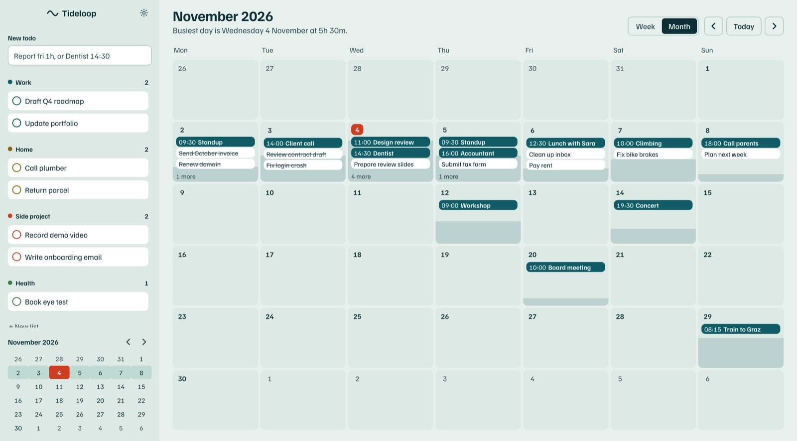
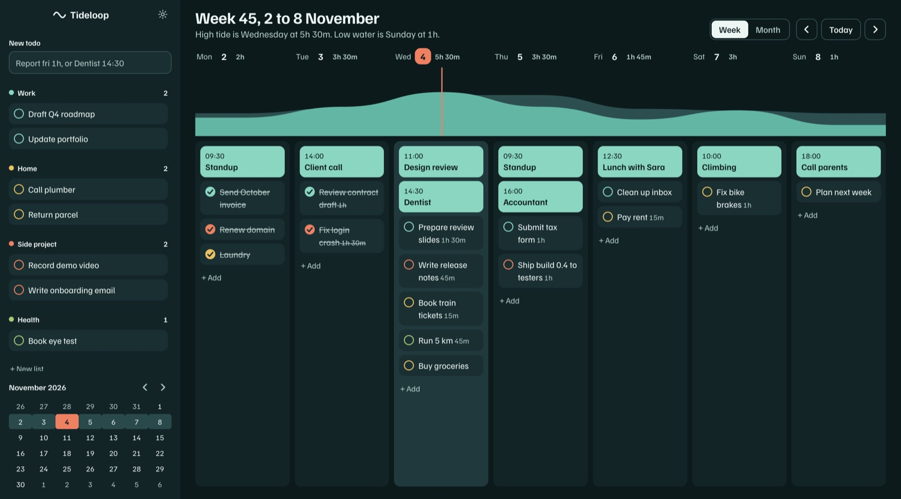

See how full
your week is
Tideloop is a week planner for macOS. A tide over your days rises as you plan, so an overloaded Thursday shows before it happens.
The first signed build is on its way. This page will offer the download as soon as Apple has notarized it.
Then look further out
The month view keeps the same water. Each day fills from the bottom as it books up, so you can find a quiet stretch at a glance, and any todo can be dropped straight onto a date.

Write it the way you think it
Every move has a key
Plan out loud with Claude Code
Turn it on in Settings and Claude Code can read your week, add todos and move things around. Edits appear in the window as they happen, and Cmd+Z takes back anything you did not want.
The server listens on your Mac only, only while Tideloop is open, and only for the private token the app gives you. It stays off until you switch it on.
$ claude mcp add --transport http --scope user tideloop \
http://127.0.0.1:47613/mcp \
--header "Authorization: Bearer ••••••••"
> What does Thursday look like? Move the tax form to Friday if it is too full.
get_week Thursday holds 3h 30m of 8h.
update_todo Submit tax form moved to Friday.
Thursday is down to 2h 30m. Friday now holds 2h 45m.Six ways to read the water
Fair questions
Check the tide before you book Thursday
The first signed build is on its way.
